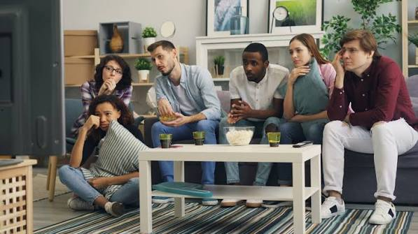

Uusi sivusto on avattu pääosin opiskelijoille, jota muut voivat myös käyttää
Uudessa sivustolla, asuntojen haku ja vuokraus on halvemmkasi kuin ennen. Uudessa sivustolla pystyy osallistumaan kimppäkämppä ohjelmaan, jossa pystyy muuttaa toisen ihmisen kanssa samaan taloon. Ohjelmaan osallistuessa vuokra, ja muut laskut puolitetaan, jolla molemmat säätsätvät enemmän rahaa, sen sijaan, kuin ykisn asumisessa
Opiskelijan yksin asuminen verrattuna kimppa asumiseen
kotoaMonet olevat sanoneen, heidän rahat olevansa tiukalla asunto kulujen takia. Näiden valitusten takia aloitettiin miettä "Miten saataisiin opiskelijoiden kustannuksia alemmaksi, että enemmän oppilaita pääsisivät opiskelemaan haluamaansa kouluun?"

Sivuston käytön hyödyt ovat
- Vuokra ja muut laskut puolitetaan
- Kimppakämppäsässä on jatkuvaa seuraa
- Sivuston käyttäminen on yksinkertaista
Sivun rakentamisessa kysyimme nältä oppilailta, minkälianen sivun pitäisi olla, jos halusivat sen olevan, jotta enemmän oppilaita muttaisivat pois vanhempien luolta ja uuteen euraan (tai yksin asumiseen).
Sivun rakentamisessa, kirjoitimme kaikki opiskelijoiden kirteerit ja kaikki pyynnöt huomioon.
Oppilaat olivat pyytäneet sivuston olevan yksinkertainen kaikille ikä ryhmille
"Projektin lopputulos oli kuitenkin isompi, mitä olimme ajatelleet. Sivun alkuperäinen idea oli tehdä sivusto vain opiskelijoille, mutta puolessa välissä tajusimme, että sivusto voisi antaa jokasien käyyttä sivuamme." Sanoi anonyyminen sivun rakentaja